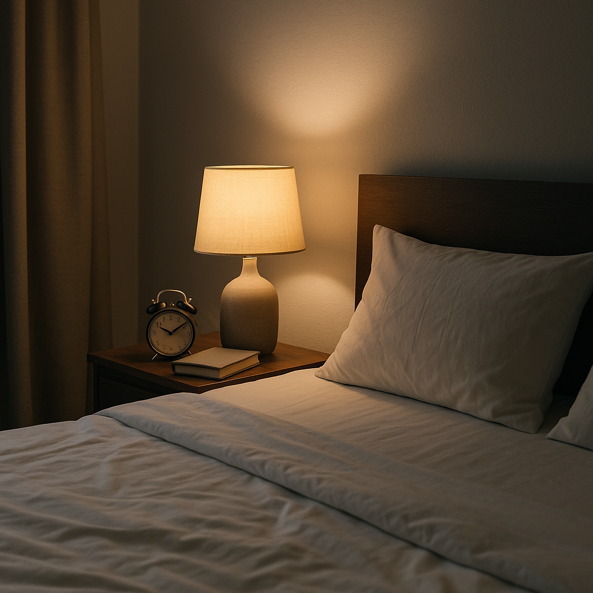
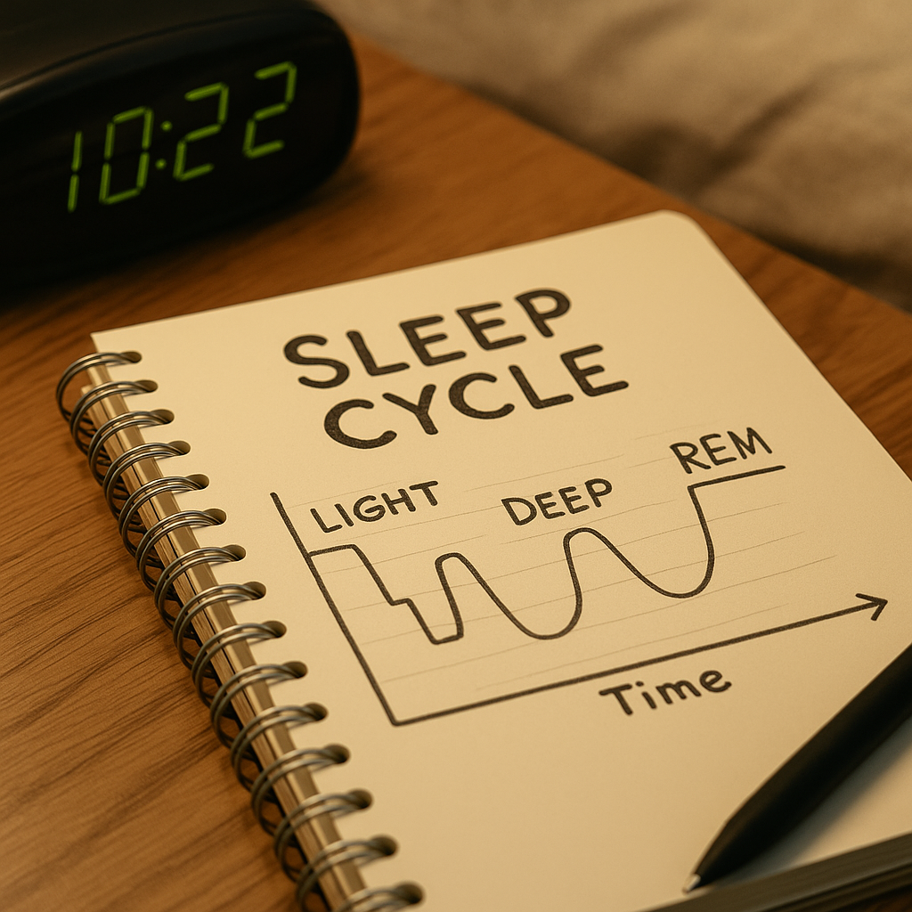
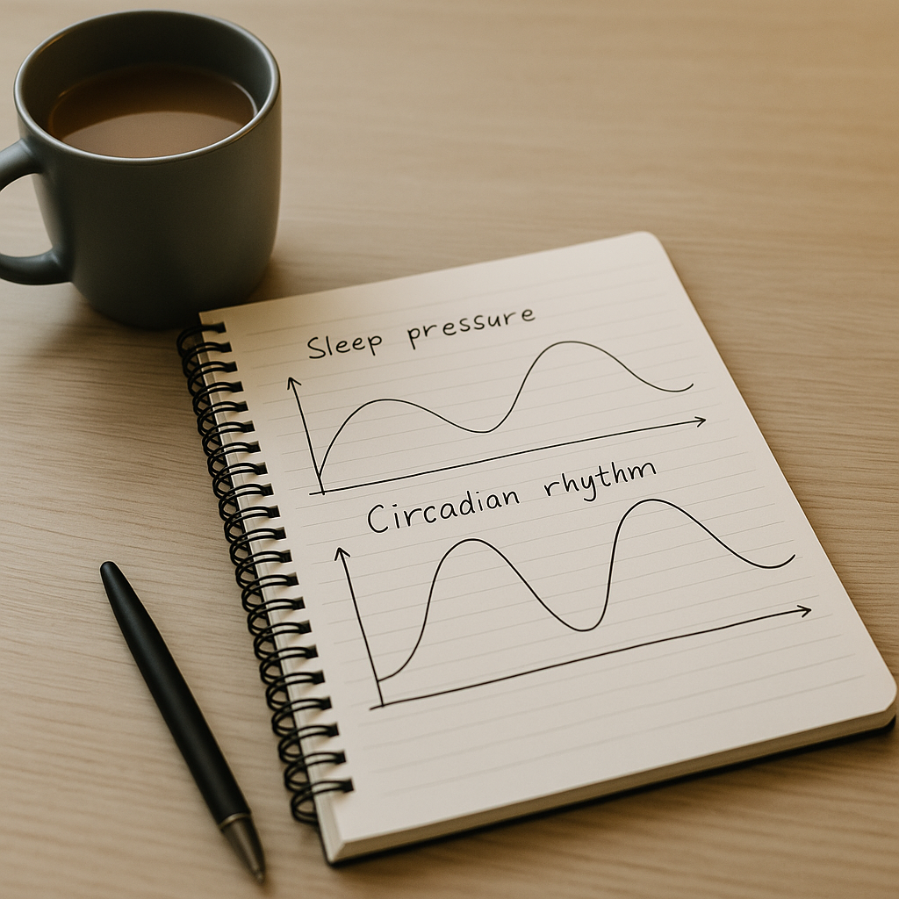
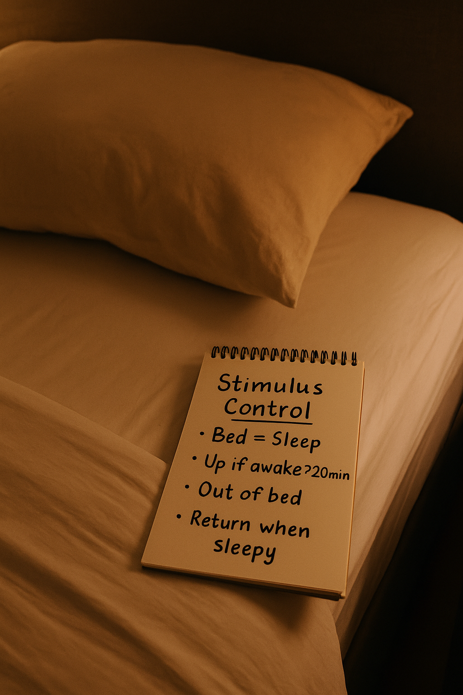
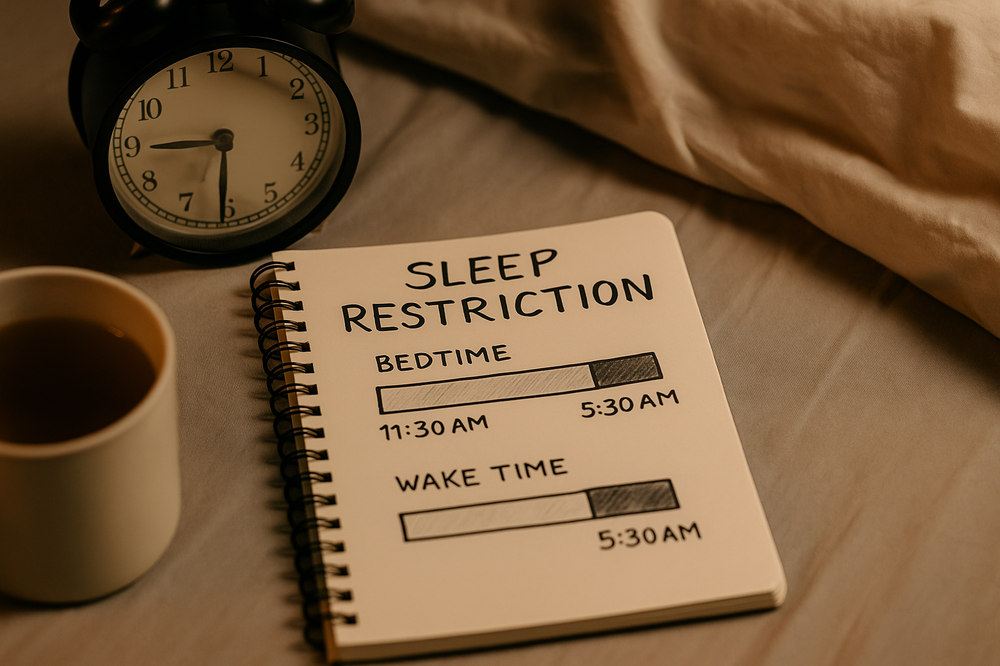

Good sleep is learnable. Tiny, repeatable habits help your body remember how.
Sleep & Insomnia
Struggling to sleep isn’t a personal failing — it’s your body’s systems stuck in the wrong settings.
This page explains how sleep works and offers practical tools for evenings, nights, and the day after.
1) How Sleep Works

We cycle through light, deep, and REM sleep several times a night.
Two main systems steer sleep:
Sleep pressure (adenosine): builds up while you’re awake; drops when you sleep.
Circadian rhythm: your 24-hour body clock (light is the master dial).

Best sleep happens when high sleep pressure meets a circadian “sleep-friendly” window.
2) Wind-Down Routine (30–60 minutes)
Your body needs a clear glide-path from “doing” to “drowsy.”
Dim the lights: lower overheads; prefer lamps; reduce screen brightness.
Close the day: jot “tomorrow’s three” on paper; place the note outside the bedroom.
Body cue: warm shower, gentle stretch, or heat pack on shoulders/feet.
Calm input: quiet music, familiar audiobook/podcast, or light reading.
Environment: cool room, comfy bedding, tidy enough to feel settled.
3) CBT-I Essentials (evidence-based)
Stimulus control: re-train “bed = sleep”

We teach the brain the bed is for sleep (and sex) — not buzzing thoughts.
Go to bed only when sleepy (not just tired).
If awake > ~20 min, get up to a low-light chair; do something bland until sleepy again.
No clock-watching — turn it away; time-checking fuels arousal.
Keep the bed for sleep/sex only (no news, email, heavy chats).
Sleep restriction → consistent window

We match “time in bed” to “time you actually sleep,” then expand slowly.
Pick a fixed wake-time you can keep daily (incl. weekends).
Estimate average nightly sleep (e.g., 5.5h). Set time in bed = sleep + 30–45 min buffer.
Stick to the window for 1–2 weeks. When sleep efficiency > 85%, widen by 15–30 min.
Never shorten the wake-time. Expand by moving bedtime earlier, slowly.
This can feel tough the first week; daytime sleepiness improves as sleep consolidates. Avoid if you have uncontrolled bipolar disorder or seizure risk — seek clinician guidance.
4) Cognitive Tools (for busy minds)
Worry list (earlier in evening): 10-minute “download”, then one next step for each item. Park the page outside the bedroom.
Thought defusion: Prefix with “I’m having the thought that…”. It creates distance without arguing with the thought.
Attention anchor: Count slow breaths; or “notice 3 sounds, 3 sensations.” Gentle, not forceful.
Compassionate self-talk: “Awake happens. Resting counts. My job is to stay cosy.”
Catastrophe balance: Write two lines: “What I’m scared will happen” vs. “What’s more likely.”
5) Relaxation Set (choose one)
4/6 breathing: Inhale 4, exhale 6 for 2–5 minutes. Long exhale signals “safe enough.”
Body scan (low-effort): From toes to scalp, silently “soften & heavy” each area.
Progressive relax: Briefly tense then release major muscle groups.
Safe-place imagery: Visualise a calm, familiar place; include sounds/temperature/smell.
Warmth: Heat pack for feet or shoulders; light blanket weight can be soothing.
6) Light & Timing (set the clock)
Morning light: 10–20 min outdoors ASAP after waking; bright window if weather awful.
Late-night light: reduce blue-rich light 2 hours before bed; use lamps, night-shift modes.
Caffeine: many sleep better with a 6–8 hour caffeine curfew (tea/coffee/colas/energy drinks).
Alcohol: may knock you out but fragments sleep later; keep small/early or skip.
Naps: if needed, keep to 10–20 min before mid-afternoon; avoid long/late naps during CBT-I.
7) Shift Work
Anchor sleep: protect a consistent 4–5 h core sleep at roughly the same clock time on most days.
Light strategy: bright light during working hours; sunglasses on the commute home after nights; dark bedroom (blackout curtains/eye mask).
Split sleep: 3–4 h post-shift + 90-min nap before next shift can beat one long block for some.
Fuel: lighter meals on nights; avoid heavy/fatty foods near sleep.
8) Teens & Young Adults
Body clocks run later in adolescence. Early starts + late rhythms = sleep debt.
Shift lights earlier: bright light within an hour of waking; dim lights 2 hours before target bedtime.
Keep wake-time steady (even weekends) within ~1 hour to stabilise the clock.
Short afternoon naps (20–30 min) are okay if nights are improving; avoid long evening naps.
Phones: charge outside the bedroom; try an audiobook timer instead of scrolling.
If you’re in immediate danger or cannot keep yourself safe, call 999 (UK).
Important Note
The information on this page is for general understanding and support.
It is not a substitute for professional medical advice. If you feel unable to keep yourself safe,
or someone else is at risk, call 999 (UK) immediately. If you’re outside the UK, contact your local emergency number.
For non-emergency concerns, consider speaking with your GP or one of the services listed above.